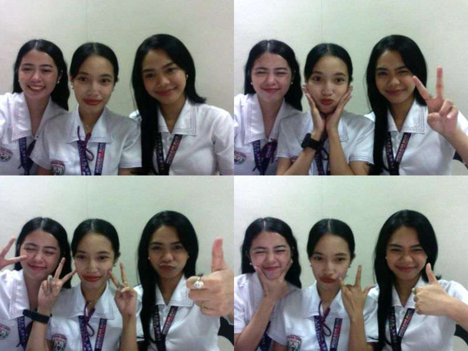
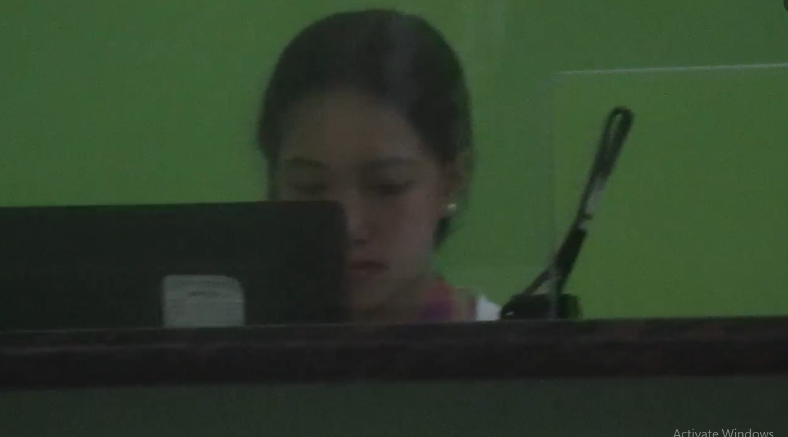
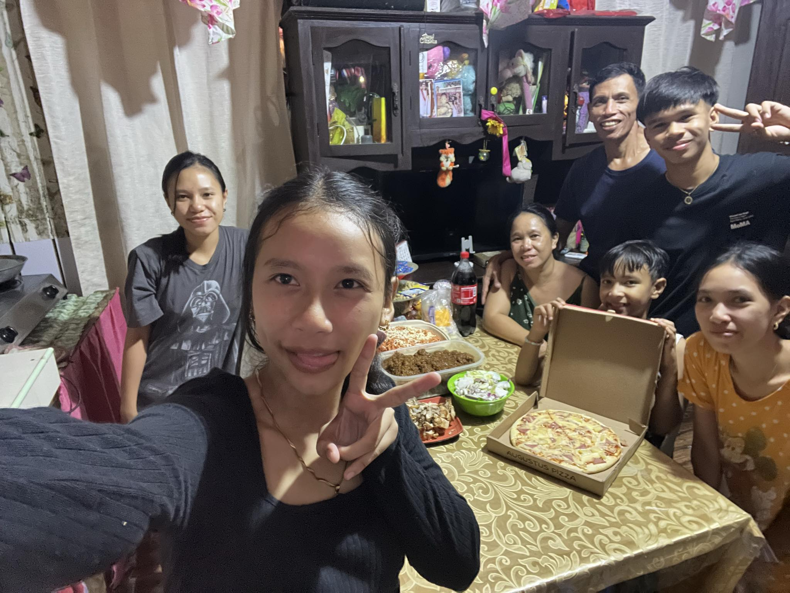
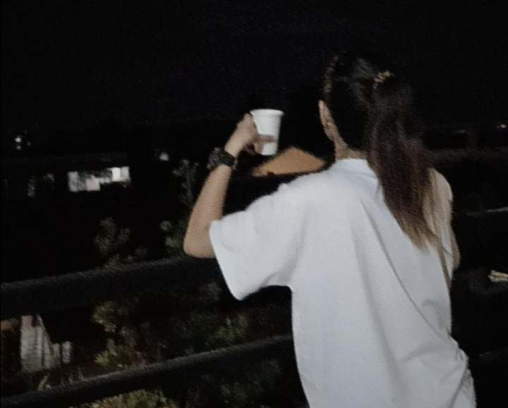

Beyond Code: The Life of Jenn Makiling
Hi, I'm Jenn Makiling, a 2nd-year BSIT student with a passion for technology and web development. My journey in college has been filled with learning, challenges, and amazing experiences that have shaped me into who I am today. Through this website, I want to share my story, interests, and achievements with you. Welcome to my digital space!
My college life as a 2nd-year BSIT student has been a journey of growth, and meeting my friends who made everything bearable has been one of the most rewarding parts. It’s not just about the classes or assignments, but the moments shared with them that have turned every challenge into an opportunity for growth. We laughed over struggles, and built bonds that make this journey inspiring and unforgettable.
Another amazing experience I had was becoming a student assistant. It’s not easy working while studying, but it taught me valuable lessons in time management, responsibility, and perseverance. Balancing academics with work was challenging, yet it made me more disciplined and independent. Through this experience, I met incredible people, learned new skills, and gained a deeper appreciation for hard work. It wasn’t just a job—it became a meaningful part of my college journey that shaped me into a more resilient and determined individual.
Having family made my life more meaningful and fulfilling. Their love, support, and encouragement have been my greatest source of strength, especially during tough times. No matter how stressful school or work gets, knowing that I have them by my side gives me the motivation to keep going. They celebrate my successes, comfort me in my struggles, and remind me of the values that truly matter. With them, every challenge becomes easier to face, and every achievement feels even more special.
Throughout my journey, my greatest accomplishment has been staying alive and choosing to move forward despite the challenges.